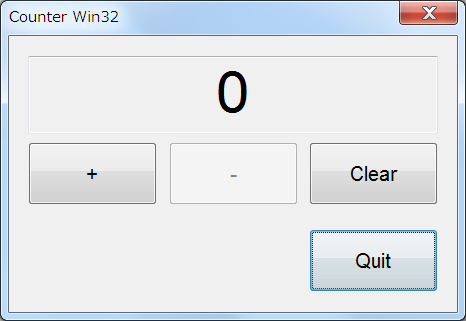

職場の若手向けお勉強テーマとして作成しました。Win32 で下記の機能を実現しなさい、という内容です。
画面仕様は以下の通り。記載事項以外は自由に設計のこと。
フォント：
Arial
|
項番 |
概要 |
ｺﾝﾄﾛｰﾙ |
ﾀﾌﾞ |
文字列、文字種別、他 |
他 |
|
1 |
|
- |
|
“Counter” |
Windowサイズ：800×600以内 |
|
2 |
値表示部 |
TextBox |
(*1) |
Number,
値範囲:0～10 |
フォントサイズ：36pt
センター表示
ReadOnly |
|
3 |
+1 |
Button |
1 |
“+” |
フォントサイズ：12pt |
|
4 |
-1 |
Button |
2 |
“-“ |
フォントサイズ：12pt |
|
5 |
0クリア |
Button |
3 |
“Clear” |
フォントサイズ：12pt |
|
6 |
プログラム
終了ボタン |
Button |
0 |
“Quit” |
フォントサイズ：12pt |
(*1) TabStop を False に設定
要求仕様に記載した内容を Win32 で実装してみます。
動作環境： Windows XP または Windows7
開発環境： Visual Studio 2008 以降
開発言語： Win32
実際に私が作成したプログラムの画面は下図の通り。

[プログラムソース（抜粋）]
// Windows ヘッダー ファイル:
#include <windows.h>
#include <windowsx.h> // SetWindowFont
// C ランタイム ヘッダー ファイル
#include <stdlib.h>
#include <malloc.h>
#include <memory.h>
#include <tchar.h> // _tWinMain, _T
#include "Resource.h"
/*=========*/
/* #define */
/*=========*/
#define USE_SEND_MESSAGE // DlgProc 内で使用。機能実装方法の分岐に使用。
// グローバル変数:
int count = 0 ;
// このコード モジュールに含まれる関数の宣言を転送します
LRESULT CALLBACK DlgProc(HWND, UINT, WPARAM, LPARAM);
int APIENTRY _tWinMain(HINSTANCE hCurInst,
HINSTANCE hPrevInst,
LPTSTR lpsCmdLine,
int nCmdShow)
{
UNREFERENCED_PARAMETER(hPrevInst);
UNREFERENCED_PARAMETER(lpsCmdLine);
DialogBox(hCurInst, MAKEINTRESOURCE(IDD_DIALOG1), NULL, (DLGPROC)DlgProc);
return 0;
}
LRESULT CALLBACK DlgProc(HWND hWnd, UINT msg, WPARAM wp, LPARAM lp)
{
static HFONT font1 ; // IDC_EDIT1 用のフォント
static const int nCountMin = 0 ; // カウンタ値 下限値
static const int nCountMax = 10 ; // カウンタ値 上限値
switch (msg) {
case WM_DESTROY:
break ;
case WM_CLOSE:
if (MessageBox(
hWnd,
(LPCTSTR)_T("プログラムを終了してよろしいですか？"),
(LPCTSTR)_T("終了確認"),
MB_YESNO | MB_ICONQUESTION) == IDNO)
{
// プログラムを終了しない
return FALSE;
}
// プログラムを終了する
EndDialog(hWnd, IDOK);
return TRUE ;
case WM_INITDIALOG:
/* IDC_EDIT1 のフォントを変更 */
{
// フォント作成
int PointSize = 36 ; // 36pt のフォントを作成します。
font1 = CreateFont(
-MulDiv(PointSize, GetDeviceCaps(GetDC(hWnd), LOGPIXELSY), 72),
0, // nWidth
0, // nEscapement
0, // nOrientation
FW_NORMAL, // nWeight
FALSE, // bItalic
FALSE, // bUnderline
0, // cStrikeOut
ANSI_CHARSET, // nCharSet
OUT_DEFAULT_PRECIS, // nOutPrecision
CLIP_DEFAULT_PRECIS, // nClipPrecision
DEFAULT_QUALITY, // nQuality
DEFAULT_PITCH | FF_SWISS, // nPitchAndFamily
_T("Arial")); // lpszFacename
/* フォントをコントロールへ設定 */
/*
===============================================================================
補足説明：
API SetWindowsFont は windowsx.h 内でマクロ定義されています。
下記２つの実装は、表現上は異なりますが、マクロを展開すると
同じ内容になります。
===============================================================================
*/
#ifdef USE_SEND_MESSAGE
// IDC_EDIT1
SendMessage( GetDlgItem( hWnd, IDC_EDIT1 ), WM_SETFONT, (WPARAM)font1, (LPARAM)1);
#else
// IDC_EDIT1
SetWindowFont( GetDlgItem( hWnd, IDC_EDIT1 ), font1, TRUE );
#endif
}
// count を初期状態に
{
count = 0 ;
SetDlgItemInt( hWnd, IDC_EDIT1, count, TRUE );
EnableWindow( GetDlgItem(hWnd, IDC_INCREMENT), TRUE);
EnableWindow( GetDlgItem(hWnd, IDC_DECREMENT), FALSE);
}
return TRUE;
case WM_COMMAND:
switch (GET_WM_COMMAND_ID(wp, lp)) {
case IDOK:
SendMessage( hWnd, WM_CLOSE, 0, 0 );
return TRUE;
case IDC_INCREMENT:
count++ ;
SetDlgItemInt( hWnd, IDC_EDIT1, count, TRUE );
if ( count==nCountMax ){
EnableWindow( GetDlgItem(hWnd, IDC_INCREMENT), FALSE);
}
if ( count!=nCountMin ){
EnableWindow( GetDlgItem(hWnd, IDC_DECREMENT), TRUE);
}
return TRUE;
case IDC_DECREMENT:
count-- ;
SetDlgItemInt( hWnd, IDC_EDIT1, count, TRUE );
if ( count!=nCountMax ){
EnableWindow( GetDlgItem(hWnd, IDC_INCREMENT), TRUE);
}
if ( count==nCountMin ){
EnableWindow( GetDlgItem(hWnd, IDC_DECREMENT), FALSE);
}
return TRUE;
case IDC_CLEAR:
count = 0 ;
SetDlgItemInt( hWnd, IDC_EDIT1, count, TRUE );
EnableWindow( GetDlgItem(hWnd, IDC_INCREMENT), TRUE);
EnableWindow( GetDlgItem(hWnd, IDC_DECREMENT), FALSE);
return TRUE;
default:
break;
}
break;
default:
break;
}
return FALSE;
}「Win32 DialogBox」の雛形に使えそうなプログラムです。
なお、Windows XP
以降のコモンコントロールを使用するためにはマニュフェストでコモンコントロールのバージョン情報を記載する必要があるそうです。以下のマニュフェストを準備し、コモンコントロールのバージョンを
6.0.0.0 で指定します。
このマニュフェストが無いとビジュアル的に古い感じのダイアログになってしまいます。
<?xml version="1.0" encoding="UTF-8" standalone="yes"?>
<assembly xmlns="urn:schemas-microsoft-com:asm.v1" manifestVersion="1.0">
<assemblyIdentity
version="1.0.0.0"
processorArchitecture="X86"
name="CounterWin32.exe"
/>
<description>.NET control deployment tool</description>
<dependency>
<dependentAssembly>
<assemblyIdentity
type="win32"
name="Microsoft.Windows.Common-Controls"
version="6.0.0.0"
processorArchitecture="X86"
publicKeyToken="6595b64144ccf1df"
language="*"
/>
</dependentAssembly>
</dependency>
</assembly>
以上です。
作成したプログラムを下記からダウンロードできます。
(1) Visual Studio 2008 版
(2) Visual Studio 2012 版
本ページの情報は、特記無い限り下記 MIT ライセンスで提供されます。
| 2022-11-21 | - | ページデザイン更新 |
| 2013-01-02 | - | 更新 |
| 2012-05-16 | - | 新規作成 |